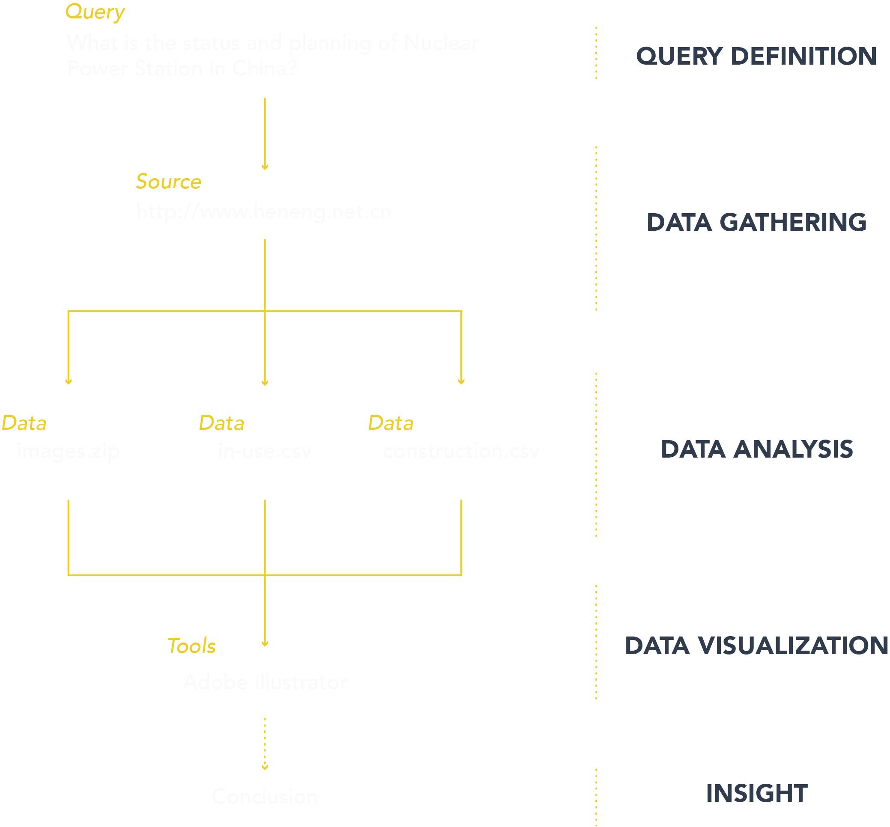

Description
我从中国核电信息网上搜集到了有关我国核电站发展现状的数据和图片，并对其进行了整理。我将每个核电站的数据按已运营核电站、建设中核电站和筹建中核电站分别进行整理，并使其按照地理位置和建设时间可视化在地图和时间轴上。同时，为详细解析不同核电站，我针对运营中核电站重点关注其能源贡献和建设成本，并为其设定了额定功率、机组数量、年发电量、设计寿命、综合国产率、投资额六个维度进行绘制雷达图；针对建设中核电站重点关注其预估能源贡献，分为额定功率、机组数量、设计寿命三个维度；针对筹建中核电站，由于信息不足，不做进一步分析。
Protocol

conclusion
通过可视化我们可以看到，运营中的核电站主要集中在东南沿海地区，建设中的核电站有超过一半在东三省地区，而未来筹建中的核电站主要集中在中西部地区，其原因归于国家十三五规划中明确指出：深入开展内陆核电研究论证和前期准备工作，认真做好核电厂址资源保护工作。国家期望利用核电站带动中部欠发达地区的经济发展，同时减轻“东电西送”中东部地区的压力，但相关研究表明，中部地区建设核电站的形式不容乐观。